数据全链路开发者
爬虫取数 → 自动分析报告 → C端小程序产品
独立搭建3套全链路项目：采集→清洗→建模→可视化
自动化报表工具，将2小时人工工作压缩至35分钟
掌握爬虫/ETL/统计建模/交互可视化全流程技术栈
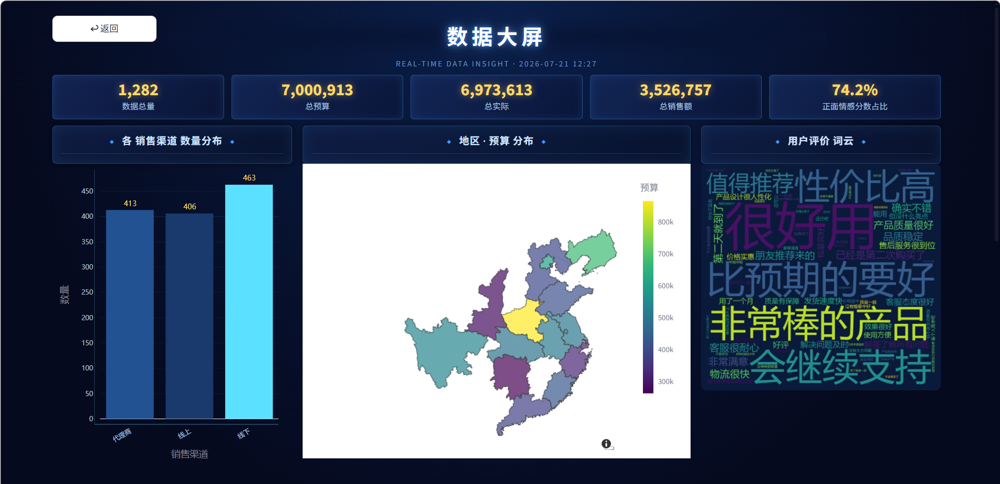
指标总览：全平台业务数据1282条；监控指标：营收同比、预算环比、超支预警阈值；数据源：本地Excel业务台账
核心成果：单份报表制作时长 2h → 35min，自动完成清洗、绘图、分析、PPT导出全流程
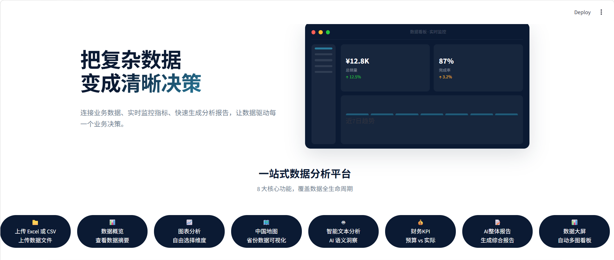
技术实现：Pandas 数据治理、Plotly 交互大屏、地名标准化引擎、DeepSeek 文本分析、财务阈值预警模型，借助 AI 辅助功能迭代、Bug 排查、界面样式开发
落地方案：本地Web无代码工具，上传Excel/CSV自动完成全链路数据处理，输出可视化看板与分析 PPT
业务痛点：业务人员手工处理报表重复繁琐，人工统计指标误差高，无统一监控预警体系
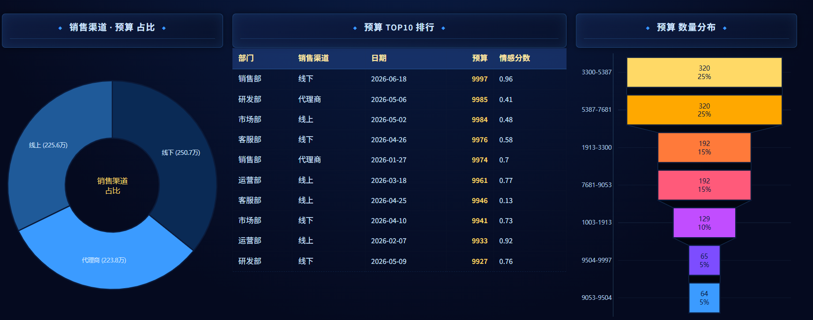
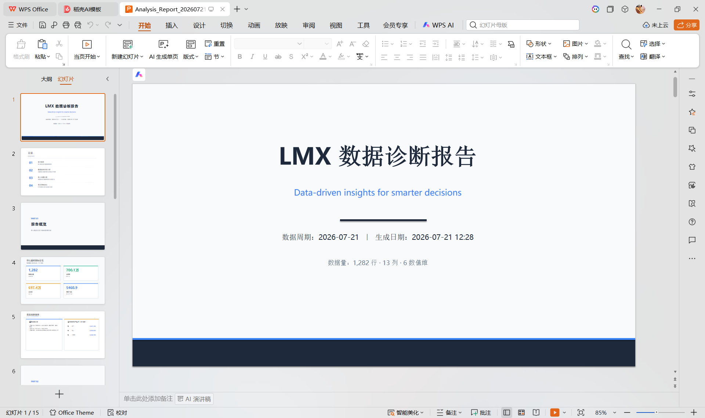
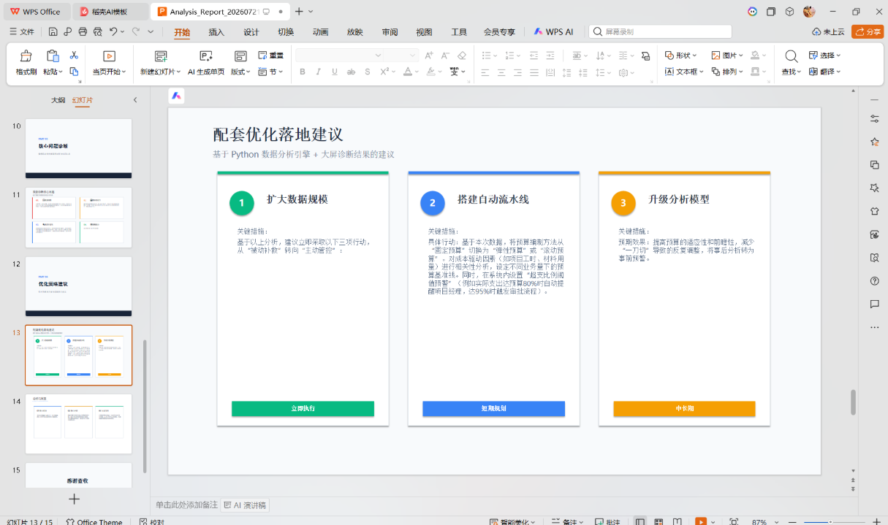
核心成果：基于本地存储统计就餐频次、菜系偏好，实现轻量化用户行为分析；搭建 5 个 Tab 主页面 + 12 个分包页面，完成隐私合规改造并提交微信审核
微信扫码体验小程序
技术实现：WXML/WXSS 分包架构、Canvas 动态转盘、结构化本地存储、食材模糊匹配检索、地图点位可视化，借助 AI 辅助算法调试、审核合规问题排查
落地方案：轻量化饮食记录工具，采集用户就餐数据做本地统计分析，内置600+菜品分类库
业务痛点：用户就餐记录零散无统计，无法量化口味偏好，缺少剩余食材匹配菜谱检索能力
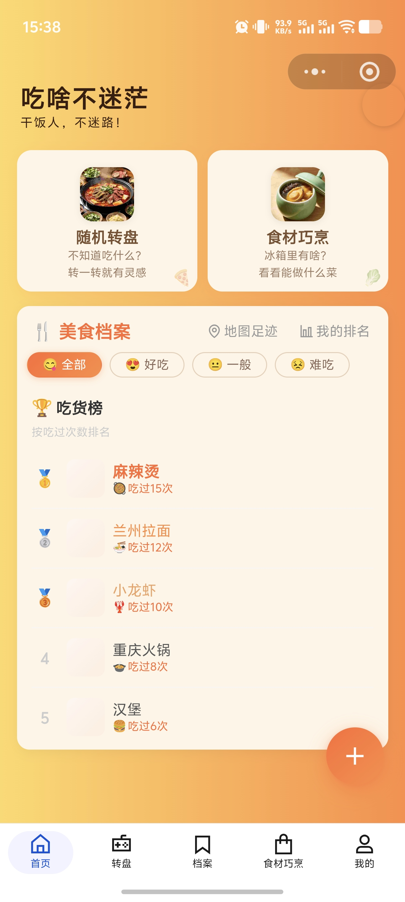
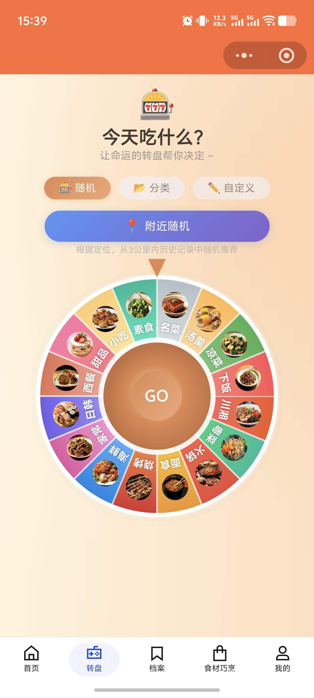
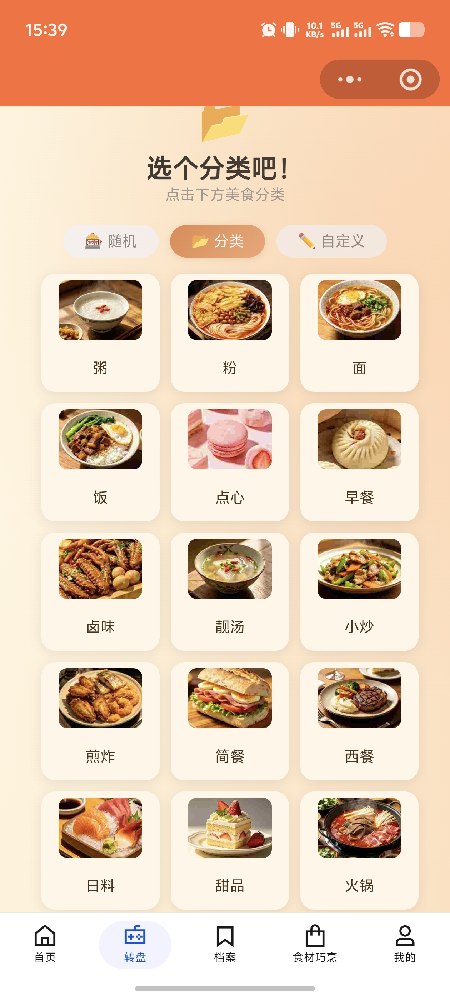
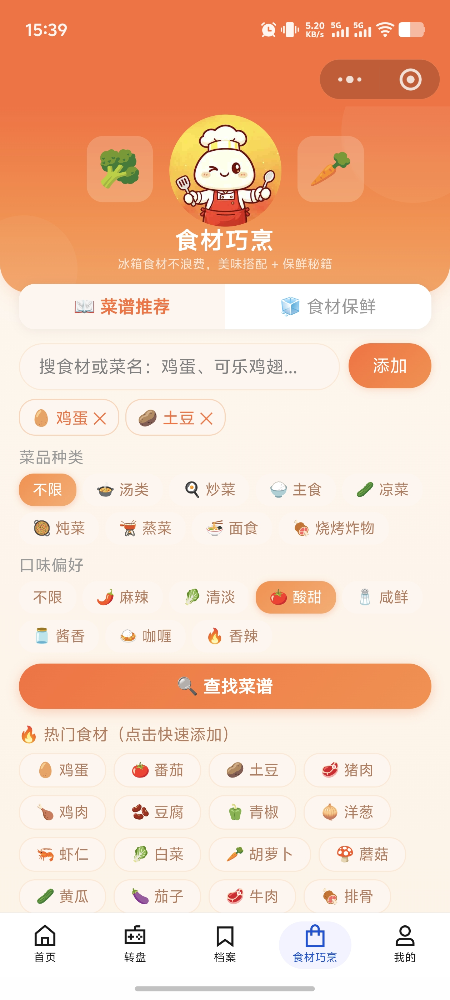
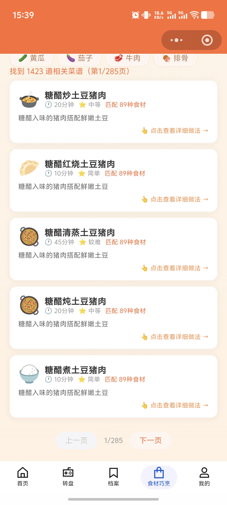
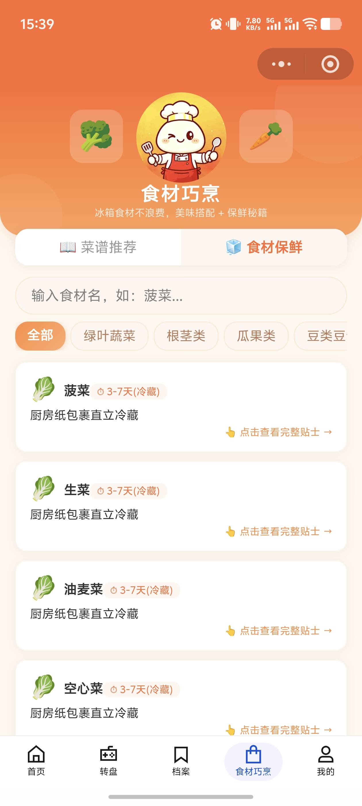
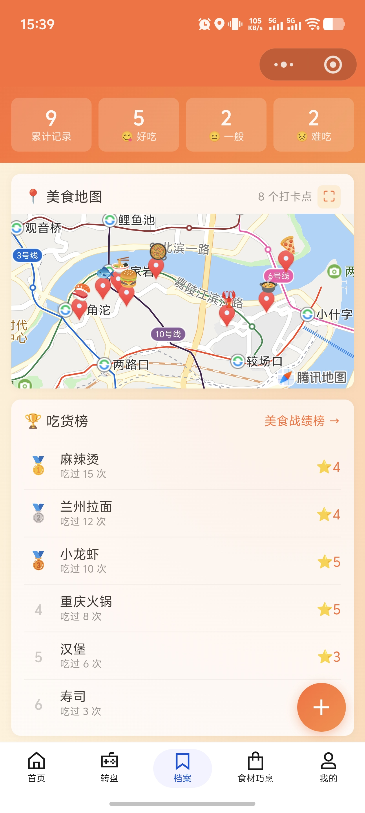
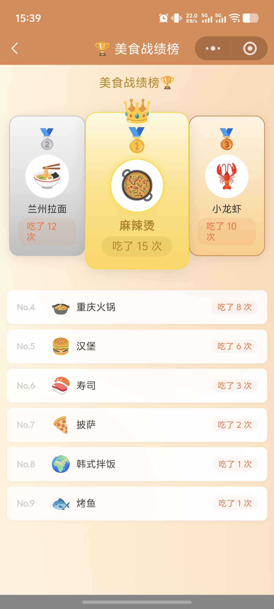
核心成果：完整实现「网页采集→文本清洗→结构化存储→多维度可视化」标准数据工程链路，产出250条标准化数据集
技术实现：Requests网页请求、BS4解析、多分支文本清洗、时序统计、词频分词词云、占比/趋势图表
落地方案：批量爬取图书全字段，导出CSV数据集，量化出版社、出版年份、热门关键词分布规律
业务痛点：豆瓣图书数据分散网页，无结构化数据集，人工汇总效率极低，无法量化优质图书产出规律
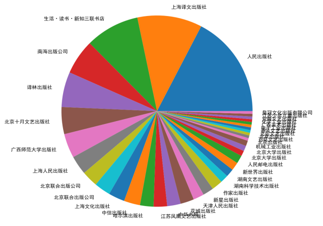
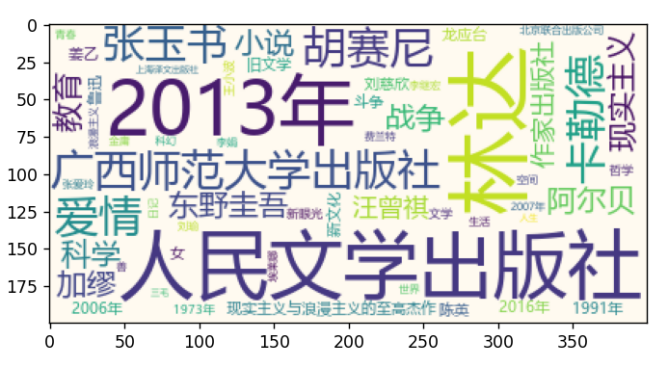
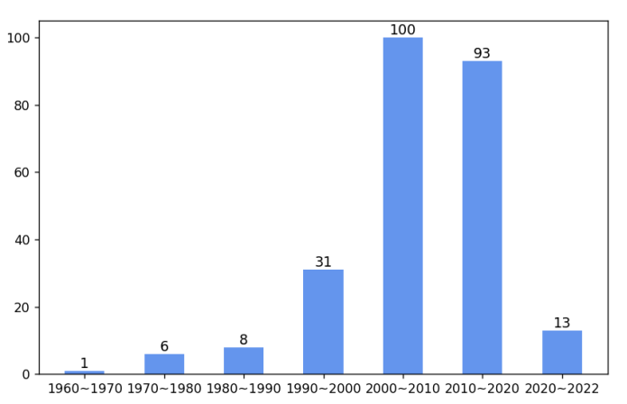
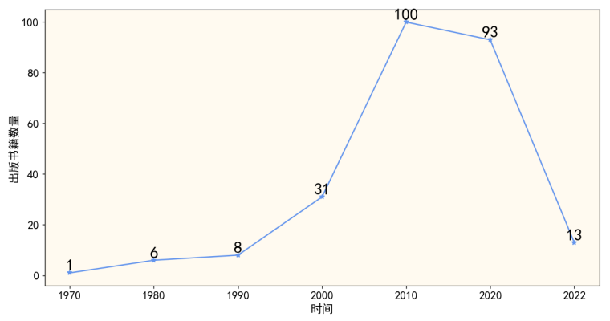
仲恺农业工程学院 · 统计学专业
仲恺农业工程学院 数学与数据科学学院 统计学本科，系统学习数理统计、抽样、计量经济，自主拓展Python数据工程、Web可视化，独立完成3套完整落地项目。
另：回归分析 · 数理统计 · 非参数统计 · 抽样调查 均分80+
覆盖方向：编程与数据工具 | 数理统计 | 经济金融统计 | 建模实践
邮箱
1533647985@qq.com
电话
135 5697 5481
微信
MDX110333
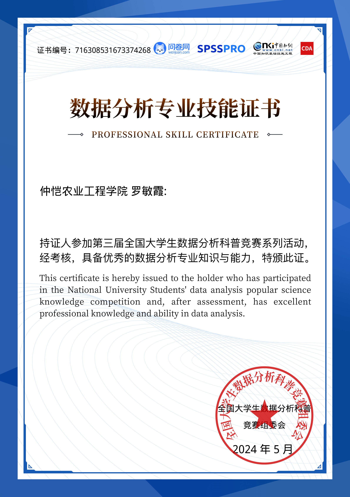
2024 第三届全国大学生数据分析实践赛（国家级）
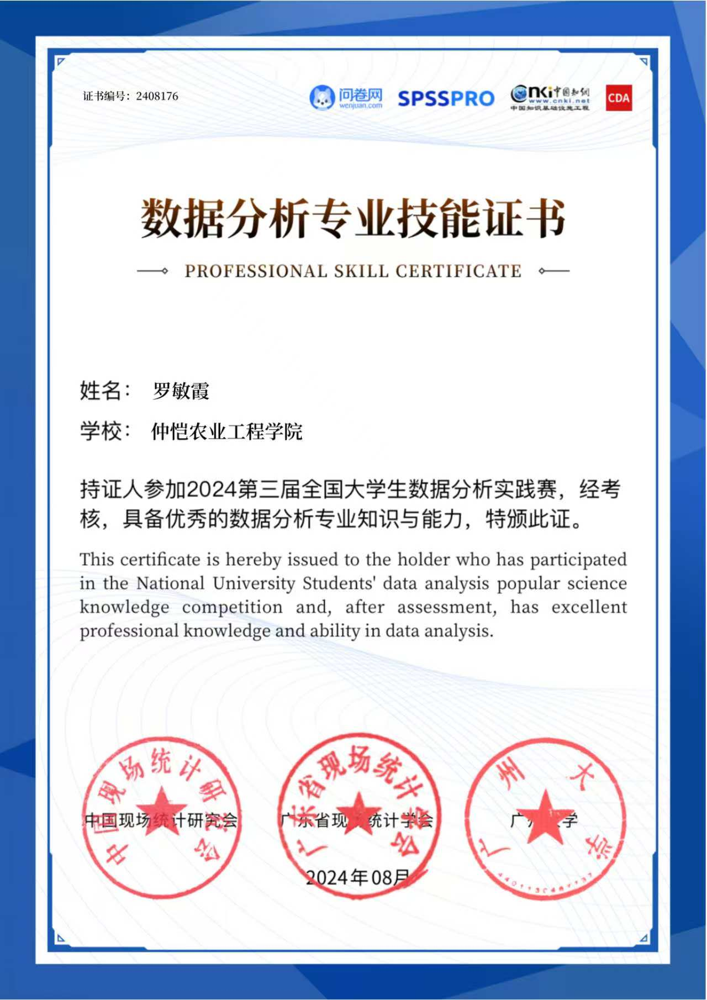
2024 全国统计建模数据分析竞赛
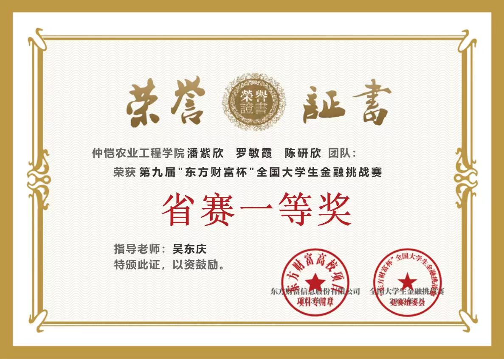
全国金融量化建模挑战赛
数据报表文档标准化认证